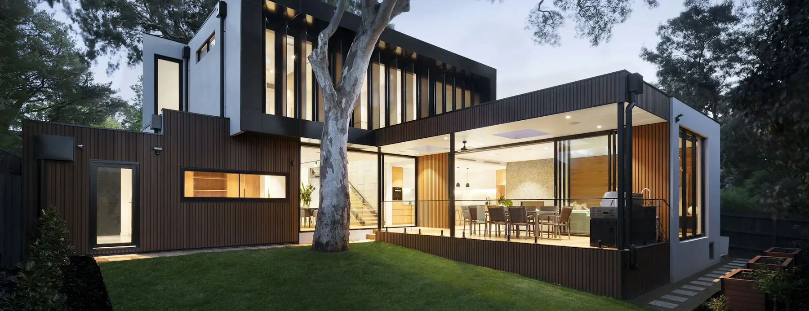

Hardscape
Patio Design & Installation in South Florida
A patio is a room. Rooms are sized by the furniture that goes in them and the space to walk around it — not by picking a square footage and paving it.
The most common patio mistake is not the material
It is the size. Specifically, it is a patio whose area is correct and whose proportions are not — a wide shallow strip that will not take a dining table, or a generous square with no room to pull a chair back once six people are sitting at it.
This happens because patios usually get specified as a number. Someone says four hundred square feet, that number goes on a drawing, and the furniture problem is discovered on the day it arrives. The fix is unglamorous: decide what the space has to hold before deciding how big it is.
Everything below follows from that. The zones you actually want, the dimensions those zones imply, then the surface, the way it meets the house, and where the water goes. Material comes late in the conversation, not first.
Step one
Start with how the space gets used
Most patios do two or three of these jobs. Very few do all four well, and trying to make one do everything is how you end up with a space that is crowded at dinner and empty the rest of the week.
Dining
The zone with the strictest dimensions, because chairs move. A table footprint is not the space requirement — the space requirement is the table plus room to push back and stand up behind every seat. Get this wrong and people eat indoors.
Lounging
More forgiving in dimensions, more demanding about position. Lounge seating wants to face something — the pool, the planting, a view out — and wants to be out of the main walking route rather than in the middle of it.
Cooking
Needs working room in front of the counter that nobody walks through while a grill is hot. It also fixes where services have to run, which is why an outdoor kitchen is a paving decision before it is an appliance decision.
Transition
The part everyone forgets. Every patio is also a route: back door to pool, kitchen to grill, gate to bins. Those paths exist whether or not they were designed, and furniture placed across one gets moved within a month.
Step two
Size and layout, worked backwards
Typical planning allowances, not rules. Measure your own furniture before committing to anything — a bulky outdoor sofa can be half as deep again as an indoor one.
| Zone | Typical allowance | What drives it |
|---|---|---|
| Dining, six seats | About 12 ft × 10 ft | Roughly three feet of clear pull-back behind each chair, on every side of the table. This is the allowance most often underestimated. |
| Lounge grouping | About 12 ft × 12 ft | A sofa, two chairs and a low table, with knee room between the seating and the table and a way to reach the far seat. |
| Grill or counter run | 3–4 ft clear working strip | Room for the cook to turn and open a lid without anyone walking behind them. |
| Main walking route | 3 ft minimum, 4 ft comfortable | Three feet lets one person pass. Four lets two walk side by side, or one carry a tray past someone standing. |
Then check the proportions against the house
A patio reads in relation to the elevation behind it. A shallow strip along a wide two-storey rear wall looks like an afterthought no matter how well it is built; a deep square against a narrow single-storey extension can feel like a parade ground. Depth matters more than people expect — a patio you can put furniture on and walk behind is a different space from one where the furniture is against the wall.
Where the yard is long and narrow, or falls away steeply, splitting the patio into two connected areas at slightly different levels usually beats forcing one large rectangle to work. That decision belongs at layout stage, not after excavation has started.
Step three
Surface options, and what changes for a patio
A patio takes foot traffic and furniture, not vehicles. That opens the field considerably compared with a driveway, and shifts the criteria from load to comfort.
Format can go larger
Without vehicle loads, bigger units become viable. Large formats mean fewer joints, a calmer field and a more contemporary read — but they need a flat, accurate base, and in a small courtyard they leave awkward cuts at every edge.
Barefoot comfort matters
Patios get walked on with no shoes far more than driveways do. Lighter colours reflect more heat than dark ones, though no paved surface stays cool in direct afternoon sun — which is why surface and shade are worth discussing together.
It is seen from indoors
Through a glazed opening the patio becomes part of the interior view, and it is in that frame most of the day. Holding the tone close to the internal floor makes the two spaces read as one; a hard contrast draws a line exactly where you wanted the eye to pass through.
Furniture is abrasive
Chairs get dragged. Softer stones mark, and metal glides mark them faster. Neither is a reason to avoid a material you like — it is a reason to know in advance and fit decent feet to the furniture.
Step four
Connecting the patio to the house and the yard
The threshold decision
Bringing the patio level with the interior floor is what makes inside and outside read as one room, and it is the detail that most distinguishes a considered space from a paved area. It is also the detail with the least margin for error, because a flush threshold has to shed water decisively away from the door rather than merely not towards it.
A modest step down is easier to drain and frequently the right answer on an existing house, where the threshold height was fixed by somebody else years ago. Neither option is universally better. What matters is that the choice is made deliberately, with the fall available across the yard measured first.
Sightlines from inside
Stand at the kitchen sink and at the sofa, and look out. Those two views are where the patio is seen from for most of its life. A layout that works on a plan and puts the back of a grill in the middle of the main view has solved the wrong problem.
Where the paving stops
The edge where hard surface meets lawn or turf decides whether a patio looks finished or looks like it ran out. Both surfaces have to agree on a finished level so water crosses cleanly and the mower is not fighting a lip. Where the boundary is close, the fence line becomes part of the composition too, because it is the backdrop to everything you have just built.

Step five
Where the water goes
South Florida rain arrives in volume rather than drizzle. A patio that has not been given somewhere to send it will choose for itself, and the choice is usually a low spot beside the furniture.
Falls are built into the base
The slope that moves water off a patio is formed in the compacted base, not corrected later by varying the bedding depth. A thick bedding layer used to fix a flat or wrong-way base is a defect that surfaces as settlement within a couple of seasons.
Away from the house, always
Every fall runs away from the building. Where a flush threshold is used, the detail immediately outside the door does the heavy lifting, and it is worth more attention than any other square foot on the project.
The receiving end matters too
Water leaving the patio has to go somewhere that can take it. Directing it onto a lawn that already sits wet moves the puddle rather than removing it. Where there is nowhere obvious for it to go, a drainage run or a permeable build-up is worth discussing at design stage rather than after the first storm.
Shade plus damp equals algae
A corner that stays wet and never sees sun will grow a slick film regardless of material. Knowing which corner that will be lets you plan for it — usually with light and airflow rather than with chemicals.
Step six
Building in a kitchen or shade structure
These are the two additions most often regretted as retrofits, for the same reason: what they need is underneath the paving.
Decide now, build later — that is fine
You do not have to install a pergola, a tiki hut or an outdoor kitchen at the same time as the patio. You do have to know whether one is likely. Footings and service routes put in while the ground is already open add very little; cutting back into finished paving to reach them costs considerably more and leaves a visible repair. If a kitchen is a maybe for two years' time, say so at the consultation and it can be allowed for.
Shade changes which hours you get
A well-built patio with no shade is used in the evening and avoided in the middle of the day. That is not a construction failure, it is a design decision that was never made. Working out which hours you actually want to reclaim points straight at the answer — filtered cover that keeps the space open, or denser cover that makes a destination out of one part of the yard.
Where the structure lands is a paving decision
Posts sit in the surface. Their positions want to fall on the setting-out so the pattern works around them rather than leaving slivers at the base of every post. That coordination is straightforward when both are planned together and fiddly when they are not.
How it runs
Installing the patio
-
Use and layout
Which zones the space has to hold, how big each needs to be, and where the routes between them run. The area falls out of this rather than being fixed first.
-
Levels and threshold
Measuring the fall available, deciding flush or stepped at the door, and fixing the finished height where paving meets lawn or turf.
-
Material and setting out
Choosing the surface against how the space is used and how it reads from indoors, then setting out the pattern so full units land in the visible field and cuts land at the edges.
-
Excavation and base
Digging to the depth the application needs, then compacting aggregate in layers with the falls formed into the base itself. Any footings or service routes go in at this stage.
-
Laying and edge restraint
Bedding screeded, units laid to the set-out, cuts made at the perimeter, and the edge restrained so the field cannot spread.
-
Jointing and handover
Joint sand swept in and vibrated home, the area washed down and cleared, then a walkthrough covering how to look after the specific material installed.
Afterwards
Living with a paver patio
Joint sand
Topped up periodically as rain and washing carry it away. Keeping joints full is what keeps the surface behaving as one interlocked field.
Furniture feet
Worth a look once a year. Worn metal glides dragged across a soft stone will leave marks that no amount of cleaning removes.
The damp corner
Shaded areas that stay wet grow algae and want cleaning more often than the rest. This is a location problem, not a material fault.
Planting at the edges
Roots are patient. Tree and shrub placement near a paved edge is best considered at design stage, since root growth beneath an edge is one of the few things that lifts a properly built surface.
Why Arco
We start with the furniture, not the square footage
The layout is the deliverable
Anyone can lay pavers to a rectangle somebody else drew. The value is in working out what the rectangle should be, and that happens on your property with a tape measure, not on a plan.
Licensed and insured
Florida Certified Building Contractor licence CBC1269393. The number is in the footer of every page on this site so you can verify it independently — worth doing with any contractor you are considering.
One team for what comes next
If a kitchen, shade structure or turf follows the patio, the same team already knows what is under the surface and where it was left ready. Nothing has to be rediscovered.
Areas we serve
Patio installation across South Florida
Common questions
Patio questions we are asked most
How big should a patio be?
Work backwards from the furniture rather than picking a number. A six-seat dining setting needs roughly three feet of clear pull-back behind every chair, which is what turns a table footprint into a usable zone. Add a lounge grouping and a path wide enough to walk past both, and the total falls out of the arithmetic. Patios that feel wrong are usually the right area in the wrong proportion, or the right size with no room to walk around the furniture.
Should the patio be level with the house or stepped down?
Level with the interior floor makes the two spaces read as one room and is the more contemporary result, but it demands careful threshold and drainage detailing so water is never directed at the door. A modest step down is simpler to drain and often the sensible answer on an existing house. The decision is made on site, because it depends on your threshold height and the fall available across the yard.
What surface is best for a patio?
Patios carry light loads compared with a driveway, so the field of workable materials is wide and the decision shifts to comfort and appearance. What matters is how the surface behaves in bare feet in the afternoon, how it reads from inside through the glass, and how forgiving it is of the furniture being dragged across it. Larger formats suit contemporary elevations and calm a big area; smaller units suit tighter, more traditional spaces.
Do I need to decide on a pergola or outdoor kitchen before the patio is built?
Ideally yes, even if you build them later. Footings for a shade structure and the power, water or gas feeding a kitchen sit below or behind finished paving. Allowing for them while the ground is open costs very little. Reaching them afterwards means lifting a surface you have already paid for. Telling us what might happen in two years is enough for it to be allowed for now.
Can you build a patio onto paving that is already there?
Sometimes. It depends on how the existing surface was installed, what condition the base underneath is in, and whether its finished level still works with what you want to add. An extension tied into a surface that is already moving inherits that movement. The existing paving gets assessed at the on-site visit before any extension is proposed.
What maintenance does a paver patio need?
Sweeping and occasional washing, plus topping up joint sand as it is gradually lost. Shaded corners that stay damp will grow algae and want cleaning more often than the open areas. Furniture feet are worth checking, since metal glides dragged repeatedly across a soft stone will mark it. Sealing is optional and a matter of preference rather than necessity.
Bring the furniture list, not a square footage
Tell us what the space has to hold and we will work out how big it needs to be. Free on-site visit, measured on your property, no obligation.